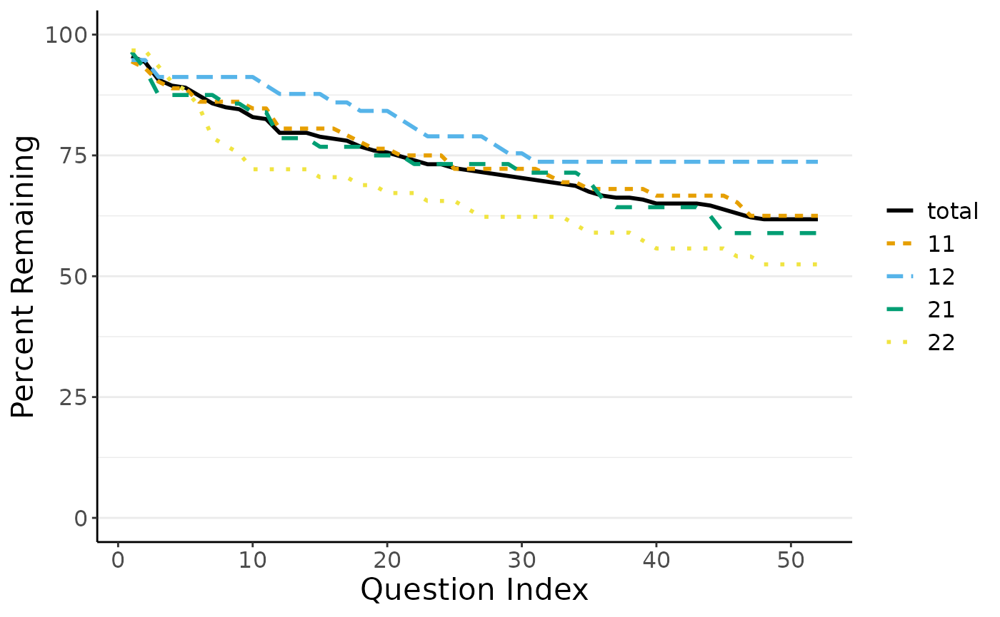

Interactive Dropout Analysis with R
interactive.RmdThough the low-hurdle of the online version with its graphical user interface (GUI) is appealing for many use cases, there are good reasons to directly use dropR’s backend on the R console - without the GUI: Some data.frames may need extra formatting or additional cleaning before they suit the dropR input format or you may want adapt and extend your analysis in a way the GUI does not allow to.
Dropout Analysis Walkthrough
This section describes how to extract information on dropout from the demo dataset without using the dropR shiny UI. First, let’s make sure the dema dataset is loaded and available. They dataset should look like this
Basic Dropout Statistics
Now, let’s extract dropout, i.e., information on when participant
dropped out of the questionnaire and never returned. In the demo dataset
questions are easily identified by their prefix vi_
qs <- which(grepl("vi_", names(dropRdemo)))
# add numeric drop out position to original dataset
dropRdemo <- add_dropout_idx(dropRdemo, q_pos = qs)
head(dropRdemo[,c(1:3,53,54)])
#> obs_id vi_1 vi_2 vi_52 experimental_condition
#> 1 7a9f33 1 1 1 11
#> 2 e11f94 1 NA NA 22
#> 3 e72a50 1 NA 1 22
#> 4 f90f5f 1 1 1 11
#> 5 20bc72 1 NA 1 12
#> 6 76b97a 1 NA NA 22The experimental_condition column indicates belonging to
a sub sample group each of which was treated differently. For example,
groups receive a different sequence of questions or different wording.
Now, let’s compute a table containing basic dropout statistics for each
item.
library(kableExtra)
stats_table <- compute_stats(dropRdemo,
by_cond = "experimental_condition",
no_of_vars = length(qs))
kable(head(stats_table))| do_idx | condition | cs | N | remain | pct_remain |
|---|---|---|---|---|---|
| 1 | total | 11 | 246 | 235 | 0.9552846 |
| 2 | total | 14 | 246 | 232 | 0.9430894 |
| 3 | total | 23 | 246 | 223 | 0.9065041 |
| 4 | total | 26 | 246 | 220 | 0.8943089 |
| 5 | total | 27 | 246 | 219 | 0.8902439 |
| 6 | total | 31 | 246 | 215 | 0.8739837 |
Out of 246 participants in the demo sample, 235 participants remain
in the survey, accounting for 95.53 percent of the sample. The
cs column shows the cummulative dropout count.
Plotting Dropout Curves
Based on the above statistics table, dropR plots dropout curves very conveniently.
plot_do_curve(stats_table)